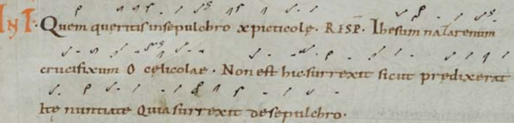
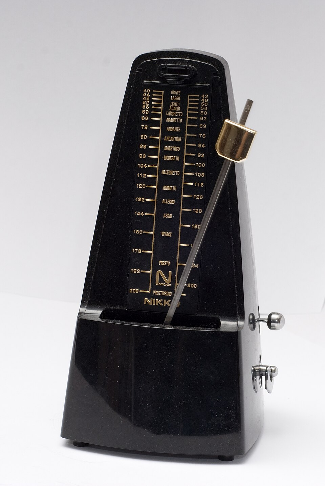

La pulsazione, il metro e la suddivisione: i tre livelli del tempo musicale, riconosciuti all’ascolto in brani di epoche e funzioni diverse, e la storia di come la durata dei suoni è arrivata sulla carta.
Musica est exercitium arithmeticae occultum nescientis se numerare animi.
Gottfried Wilhelm Leibniz, lettera a Christian Goldbach, 17 aprile 1712
La musica è un esercizio nascosto di aritmetica, in cui l’anima non sa di contare.
A1Metro, pulsazione e suddivisione, p. 2, sezione A
È la lezione del libro che accompagna tutta l’unità 1.
Teoria viene dal greco theoreîn, «osservare», la stessa radice di «teatro»: è la descrizione di come è fatta la musica, ricavata dall’osservazione. Analisi è lo studio di un brano reale, scomposto nei suoi elementi per capire come funziona. Composizione è il procedimento inverso: costruire un brano con gli stessi elementi.
Le tre attività dipendono l’una dall’altra: non si analizza senza la teoria, e non si compone con consapevolezza senza aver analizzato.
L’ordine è sempre lo stesso: prima si fa, poi si nomina, infine si scrive. Una definizione data dopo l’esperienza corrispondente diventa uno strumento; data prima, resta una formula. È anche l’ordine storico: le regole dell’armonia e del ritmo sono state ricavate da secoli di musica già scritta, quasi sempre da compositori che insegnavano.
Chi arriva al liceo musicale riconosce già all’ascolto molte cose che non sa nominare: un brano che sta per finire, un suono stonato, un passo che accelera. Il lavoro del corso è rendere consapevole questo sapere e dargli una terminologia esatta.
Non esistono per noi leggi eterne, ma solo indicazioni che hanno valore finché non vengono superate ed eliminate, del tutto o in parte, da condizioni nuove.
Arnold Schönberg, Manuale di armonia, 1911
Ogni ora del corso appartiene a una di tre aree. Il nome dell’area compare in alto a sinistra di ogni slide, e il filetto sotto il titolo ne ripete il colore: questa slide appartiene all’esperienza percettiva.
L’orecchio e la voce. Solfeggio parlato e cantato, dettato, riconoscimento all’ascolto. L’orecchio si allena come uno strumento, e per questo ha un’ora propria.
Come è fatta la musica, e come si costruisce. Durate, note, intervalli, scale, accordi; poi la scrittura di melodie, bassi e corali.
Brani reali, scomposti. Le regole nascono dall’osservazione del repertorio, e nel repertorio vengono verificate.
La mano, tenuta a coppa, percuote il banco con i polpastrelli: si muovono le dita, non il braccio né la spalla.
La pulsazione si batte con la mano sinistra; la destra resta libera, perché nella lettura ritmica batterà il ritmo mentre la sinistra tiene il tempo.
Battere con il braccio. Il gesto ampio stanca in pochi minuti, e la mano stanca rallenta: una pulsazione che rallenta non misura più nulla. Con le dita lo stesso gesto si mantiene per un’ora.
In piedi, tutti insieme. Si scandisce la pulsazione battendo quattro volte le mani, poi quattro volte i piedi, poi ancora le mani, senza che il battito cambi velocità nel passaggio. Chi accelera lo sente da solo: il gruppo va avanti e lui resta indietro.
Il primo dei tre ascolti si fa prima di qualunque spiegazione: la consegna è soltanto trovare il battito.
Mozart scrive questo quartetto a sedici anni, nell’autunno del 1772, durante il terzo e ultimo viaggio in Italia con il padre. È il primo di sei quartetti composti lungo la strada per Milano: non commissioni, ma studi sul genere, condotti sui modelli ascoltati in Italia.
Se quasi tutta la classe batte insieme senza essersi accordata, l’ascolto ha già mostrato un fatto: la pulsazione non è un’opinione, e orecchie diverse la collocano nello stesso punto.
Stessa consegna, su una musica nata per un’altra funzione: una giga da ballo della tradizione irlandese, trasmessa oralmente.
La giga è una danza veloce che, verso la fine del Seicento, entra nella musica d’arte come movimento conclusivo della suite: Corelli, Händel e Bach ne hanno scritte molte. La tradizione da ballo non si è interrotta, e in Irlanda la giga si suona ancora, nello stesso metro e a velocità simile.
Il quartetto di Mozart si ascolta da fermi e si tramanda scritto; la giga serve a ballare e si tramanda a memoria. La pulsazione si trova in entrambi con la stessa immediatezza: è un fatto generale della musica, non la caratteristica di uno stile. Cambia invece la divisione del battito: nel Mozart lo spazio fra due battiti si divide in due, nella giga in tre. La differenza ha un nome, suddivisione semplice e composta, ed è l’oggetto della lezione 4; la scrittura dei tempi composti è all’unità 3.
Carl Philipp Emanuel Bach, secondo figlio di Johann Sebastian, è nel Settecento più noto del padre. Nel 1753 pubblica il Saggio sul vero modo di suonare gli strumenti a tastiera, uno dei primi trattati che insegnino non solo la tecnica ma il fraseggio. Il Poco adagio cambia carattere di continuo, e chiede all’esecutore di tenere il tempo senza irrigidirlo.
In un tempo lento la mano accelera senza che chi batte se ne accorga: lo spazio fra i battiti è lungo, e la mano lo accorcia. Per questo il controllo lo fa il compagno, non chi batte.
Il componente esegue quattro battute di colpi percussivi. Stabilire ogni quante pulsazioni torna l’accento e, dentro ogni pulsazione, se i colpi sono due o tre; la risposta si sceglie solo dopo che la classe si è espressa.
La musica è fatta di suoni di durata diversa che si succedono nel tempo. Per misurarne le durate si usa come riferimento una successione regolare di battiti uguali, alla stessa distanza nel tempo: la pulsazione, detta anche unità di tempo.
Libro, A1 pp. 2–5; Andrea Cappellari, Teoria musicale, p. 14 («unità di tempo» o «pulsazione») e p. 15.
La pulsazione non coincide con le note del brano: le note possono essere più fitte dei battiti, coincidere con essi o durare più battiti. Nell’esempio il rigo superiore è il ritmo di una melodia, quello inferiore la pulsazione che vi sta sotto; le due righe durano lo stesso tempo e sono allineate.
Battere le note invece della pulsazione. Nelle battute 3 e 6 le note sono più fitte dei battiti, nelle battute 4 e 8 una nota dura due battiti: chi segue le note accelera nelle prime e si ferma nelle seconde. La pulsazione continua uguale in entrambi i casi.
Prima del metronomo il riferimento per la velocità era il corpo. I teorici del Quattro e del Cinquecento, fra cui Franchino Gaffurio (Practica musicae, 1496), paragonavano il tactus, l’unità di misura della polifonia, al polso di un uomo che respira con calma: fra sessanta e ottanta battiti al minuto, la zona in cui la pulsazione musicale risulta più naturale da seguire.
Avviare la pulsazione e batterla insieme al componente; poi accendere suddivisione e metro.
Una serie di suoni identici ed equidistanti, ascoltata per qualche secondo, viene percepita come raggruppata, quasi sempre a due, talvolta a tre: nel suono non cambia nulla. Il fenomeno, detto ritmizzazione soggettiva, fu studiato sperimentalmente alla fine dell’Ottocento (Thaddeus L. Bolton, 1894).
«Anche là dove si hanno eventi sonori identici, l’orecchio li raggruppa sentendo (anche se in realtà non c’è) una pulsazione nella quale si alternano battiti accentuati e battiti non accentuati.» Andrea Cappellari, Teoria musicale, p. 14.
La pulsazione è dunque una costruzione della percezione, non una proprietà fisica del suono: nell’onda sonora non c’è un segnale che indichi il battito, ci sono solo variazioni di pressione dell’aria. Chi ascolta cerca una regolarità e la usa come griglia per misurare tutto il resto.
Livelli diversi, entrambi giusti. Due ascoltatori possono battere lo stesso brano a velocità diverse, l’una doppia dell’altra, ed essere entrambi in accordo con la musica: hanno scelto due livelli della stessa griglia.
La funzione del direttore. Un’orchestra troverebbe la pulsazione da sola; il direttore serve a renderla la stessa per tutti e a mantenerla tale quando la musica rallenta o accelera. Per la stessa ragione in classe si batte insieme e in modo visibile: è il solo modo di rendere comune un fatto che avviene nella percezione di ciascuno.
A1Metro, pulsazione e suddivisione, pp. 2–13
Lo schema dei tre livelli regge tutta la sezione A del libro.
I battiti diversi trovati nei tre ascolti non sono alternativi: convivono nello stesso brano, l’uno dentro l’altro.
Il livello più ampio: raggruppa le pulsazioni a due, a tre, a quattro. In ogni gruppo il primo battito è accentato. Cappellari lo definisce «alternanza periodica di pulsazioni accentate e non accentate» (Teoria musicale, p. 15).
Il livello intermedio, quello che si batte spontaneamente; il numero dei battiti al minuto si riferisce a questo livello.
Il livello più minuto: divide ogni pulsazione in due o in tre parti uguali.
Otto battute per riga: otto colpi in alto, sedici in mezzo, trentadue in basso. Il primo colpo di ogni gruppo cade nello stesso istante su tutte e tre le righe.
Considerare i tre livelli come tre fenomeni separati. Sono lo stesso battito osservato a tre distanze: rallentando abbastanza la suddivisione diventa pulsazione, accelerando abbastanza la pulsazione diventa suddivisione. Per questo un valzer molto veloce si dirige «in uno»: il gesto batte la battuta intera e i tre battiti diventano la sua suddivisione.
Seduti. La mano destra batte la pulsazione, la sinistra batte una volta sola ogni due battiti della destra: la destra tiene il passo, la sinistra conta le misure. Poi si scambia, sinistra la pulsazione e destra la misura. La seconda volta è molto più difficile della prima, ed è quello il punto.
Quando le note passano fitte, la mano tende ad accelerare per starle dietro. È esattamente quello che non deve succedere: la pulsazione è il metro, e un metro che si allunga quando la stanza si allunga non misura più niente.
Vale anche quando ci si controlla a vicenda: a chi accelera non si dice «vai più piano», gli si dice dove ha accelerato. È lì che c'era la difficoltà, e riconoscerla è già mezzo rimedio.
Nel terzo movimento del primo quartetto di Haydn, dopo le battute introduttive a valori lunghi, il primo violino canta e gli altri strumenti ribattono note brevi e regolari: l’accompagnamento rende udibile la suddivisione, la melodia si muove più liberamente sopra.
Il gruppo della suddivisione deve essere veloce e preciso: conviene alternare due dita. Il gruppo del metro ha il problema opposto, perché gli intervalli sono lunghi e il conto si perde: si contano mentalmente le pulsazioni fra un colpo e l’altro. Ciò che si esercita è l’indipendenza, cioè mantenere il proprio livello mentre se ne ascoltano altri due: la stessa capacità richiesta dalla musica d’insieme, dalla lettura su due righi e dalla scrittura a più voci.
La scrittura delle altezze è molto più antica di quella delle durate: per secoli si è saputo indicare quale nota cantare, ma non quanto tenerla.

I neumi del canto gregoriano, dal IX secolo, segnano il profilo melodico: il canto si conosceva già a memoria, e la scrittura serviva da promemoria.
Finché canta una voce sola, la durata può restare nella memoria. Quando più voci diverse devono procedere insieme, ciascun cantore deve sapere quanto dura ogni nota. La notazione mensurale, fra XII e XIII secolo, risponde a questa necessità: «mensurale» significa misurata, e per la prima volta la forma della figura indica la durata.
La notazione del ritmo non nasce da un desiderio di precisione, ma dalla necessità di stare insieme: la stessa ragione per cui esiste il direttore d’orchestra.
Scrivere quanto dura una nota rispetto alle altre è diverso dallo scrivere a quale velocità procede il brano. Fino all’Ottocento la velocità si indica con parole che descrivono un carattere: Adagio, «a proprio agio»; Andante, «camminando»; Allegro. Il metronomo a pendolo, costruito sul meccanismo di Dietrich Winkel, è brevettato da Johann Nepomuk Maelzel nel 1815: da allora si può scrivere un numero, i battiti al minuto. La sigla M.M. davanti al numero significa Metronomo Maelzel.
Beethoven è tra i primi a servirsene, aggiungendo indicazioni metronomiche anche a sinfonie già composte. Molte di quelle cifre risultano oggi molto veloci, e da due secoli si discute se dipendano da uno strumento difettoso, da una lettura diversa della scala o da unda un’idea del tempo diversa dalla nostrarsquo;idea del tempo diversa da quella odierna.

Gli strumenti della notazione nascono da problemi concreti dell’esecuzione, non da scelte astratte. Davanti a un segno che sembra arbitrario conviene chiedersi quale difficoltà pratica risolveva: la lezione 2 lo mostra per la stanghetta di battuta. Il metronomo, inoltre, indica quanto veloce, non dove cadono gli accenti: quelli restano affidati all’ascolto.
Vero o falso, e perché: a voce alta, un’affermazione alla volta. La risposta si scopre solo dopo che qualcuno ha motivato la propria scelta.
Successione regolare di battiti uguali, alla stessa distanza nel tempo, che si avverte sotto la musica e serve a misurarne le durate. Non è nel suono: la costruisce chi ascolta.
Metro (le pulsazioni raggruppate), pulsazione, suddivisione (la pulsazione divisa in due o in tre): lo stesso battito osservato a tre distanze.
Le durate si sono scritte dopo le altezze, quando più voci hanno dovuto cantare insieme; la velocità si scrive in numeri solo dal 1815.
A1Metro, pulsazione e suddivisione, pp. 2–5; a p. 6 il solfeggio ritmico con le sillabe: l’insegnante propone il modello, la classe risponde.
L’ora si chiude con il solfeggio ritmico delle slide «In classe», dopo i compiti. La lezione 2 dà un nome al raggruppamento delle pulsazioni e lo porta sul rigo.
Compiti per la prossima volta
Sul quaderno disegna due schemi a tre righe, come quello della slide «Tre livelli sovrapposti», con trattini verticali al posto delle note: in alto il metro, in mezzo la pulsazione, in basso la suddivisione. Ogni schema dura otto battute di due pulsazioni, separate da stanghette.
Schema 1: ogni pulsazione divisa in due. Schema 2: ogni pulsazione divisa in tre. Ogni trattino del metro va esattamente sopra la prima pulsazione del suo gruppo, e il primo trattino delle tre righe cade nello stesso punto. Accanto a ogni schema scrivi se la suddivisione è semplice o composta, e quale brano della lezione gli somiglia.
Sul quaderno, a matita. La foto del lavoro finito va su Classroom. Nel Workbook è l’esercizio C1-U1-L1-14.
Compiti per la prossima volta
n. 4 e n. 5 parlato · n. 6 e n. 7 cantato · n. 8 e n. 9 ritmico
Ogni pezzo a tempo, senza fermarti: il parlato a nomi, il cantato prendendo il primo suono dalla tastiera, il ritmico battendo la pulsazione.
Ascolta battendo la pulsazione. Dove torna l’accento? Scrivi sul quaderno il metro (in 2, in 3 o in 4) e quante battute hai contato.
Il dettato · otto battute
Le sezioni (riferimento, tutto, le coppie, il collegamento) si ascoltano una per una e si ripetono quanto serve; le fasi fanno la procedura della classe, con gli annunci e le pause, da qualunque punto.
Sul quaderno scrivi in testa la sigla C1-D-U01-L1. Si corregge all’inizio della prossima lezione.
Scritto: I tre livelli in otto battute (Workbook, esercizio C1-U1-L1-14), sul quaderno; la foto va su Classroom. Solfeggio dal quaderno di lettura: parlato n. 4, 5; cantato n. 6, 7; ritmico n. 8, 9 (a tempo, senza fermarsi). Dettato C1-D-U01-L1 dalla pagina della lezione (sezioni da ascoltare, o le fasi della procedura guidata), sul quaderno con la sigla.
In classe
A nomi, a tempo, con la mano che batte. Chi si ferma riparte dalla battuta dopo.
Apri il n. 1 nel quaderno di lettura ↗ chiave di violino · 4/4
In classe
Si prende il tono dalla tastiera, si canta insieme; poi a gruppi.
Apri il n. 2 nel quaderno di lettura ↗ chiave di violino · 4/4
In classe
Tutti insieme, battendo la pulsazione. Poi a file, due battute a testa.
In classe
Sul quaderno disegna due schemi a tre righe, come quello della slide «Tre livelli sovrapposti», con trattini verticali al posto delle note: in alto il metro, in mezzo la pulsazione, in basso la suddivisione. Ogni schema dura otto battute di due pulsazioni, separate da stanghette.
Dieci minuti insieme sul quaderno, alla lavagna il primo punto; il resto è il compito per casa.